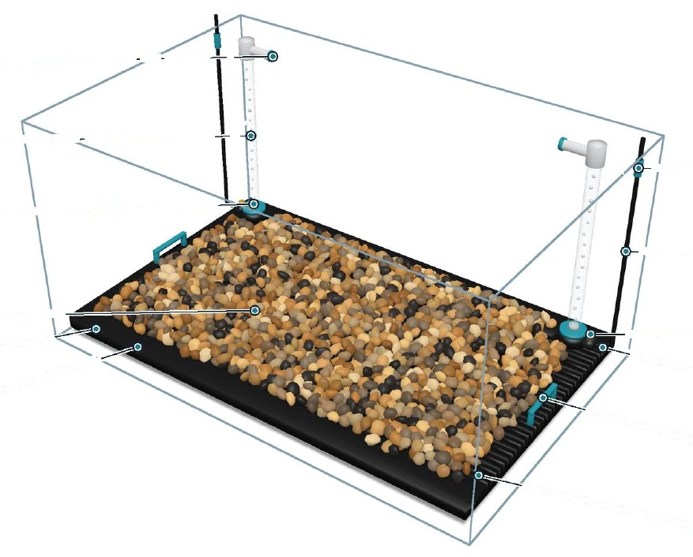
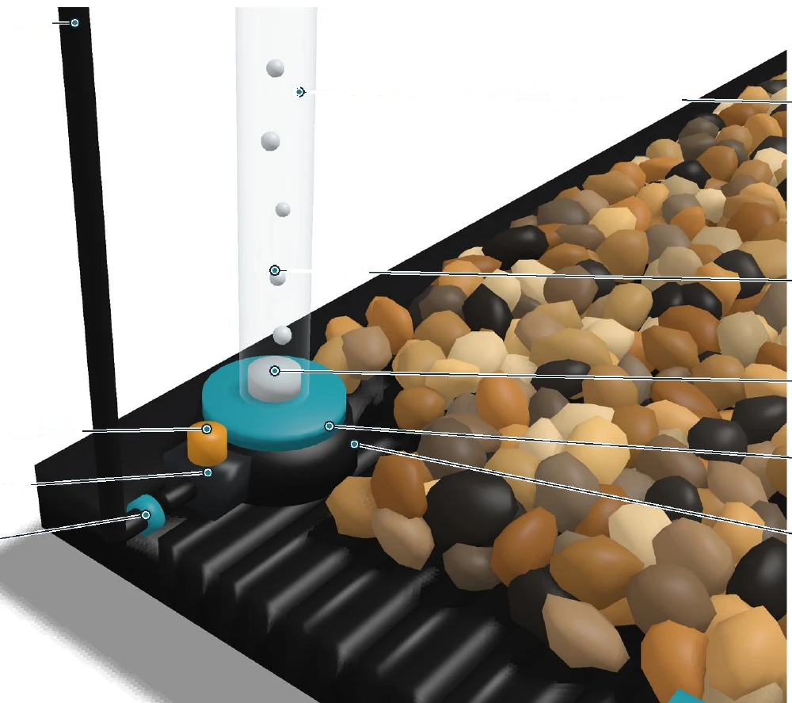
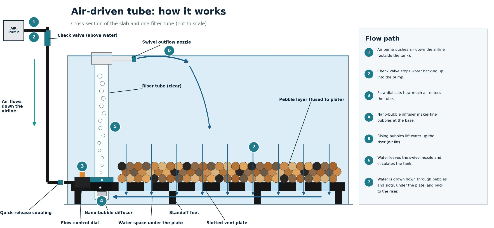
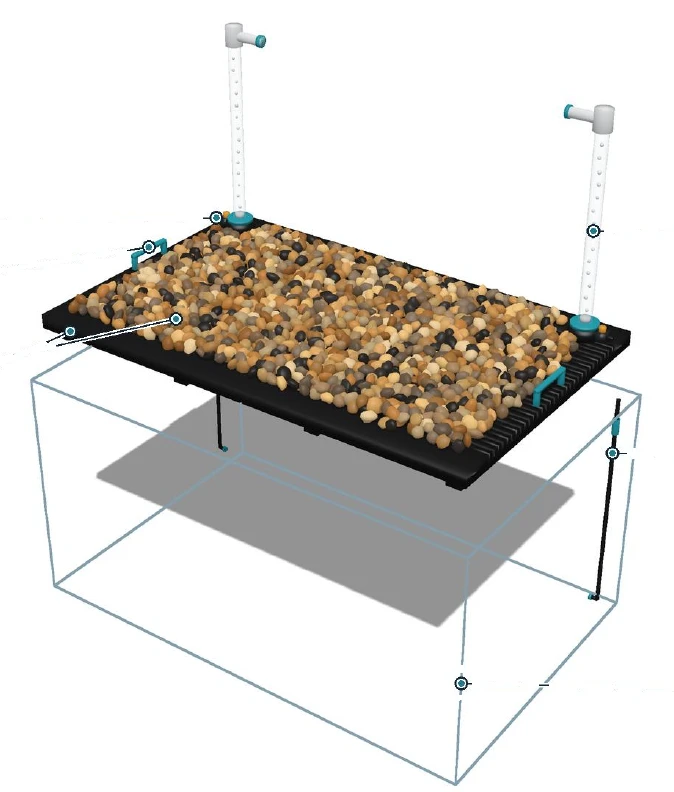
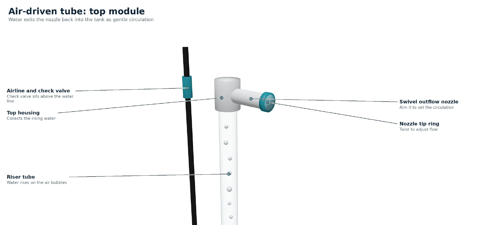

Disconnect
Turn off the air pump and release the airline connection. The quick-release coupling lets the slab separate from the airline.
The removable aquarium gravel bed with built-in filtration. A cleaner tank and a simpler life, now available.
See the design
One slab with a slotted plate, a pebble layer and an air-driven tube at each back corner. It all comes out together.


Slotted vent plate Nano-bubble diffuser + base collar Pebble modules clip on

How it works
Three simple steps turn a long gravel-cleaning session into a few minutes of work.
Turn off the air pump and release the airline connection. The quick-release coupling lets the slab separate from the airline.
Unfold the handles and lift the GravelLift bed out as one piece. Both tubes come with it. No scooping, no vacuuming loose gravel.
Rinse the removable bed under a faucet or in a tub, then lower it back into the aquarium and reconnect the airline.
The product
Tap the markers to explore every part of the design. Every image is an illustrated model of the product.
$54.99
External air pump not included. It works with a standard air pump you may already own.
| Fits | Standard 10-gallon aquarium, about 20 × 10 in floor footprint |
|---|---|
| Vent plate | Rigid, injection-molded black polypropylene; slotted for water flow, ribbed for stiffness, standoff feet, two fold-down handles |
| Pebble layer | Pre-colored silicone pebble modules (Natural Mix) that clip onto the plate with mechanical anchors, replaceable individually |
| Airlift (×2) | Clear riser tube, base collar, replaceable ceramic nano-bubble diffuser, flow-control dial, swivel outflow nozzle |
| Air supply | Standard external air pump (sold separately); inline check valve; quick-release coupling |
| In the water | No electrical parts |
| Weight, height, flow rate | Add final weight, height and flow rate |
Replaces clogged diffusers every few months.
Two risers, caps and nozzles. Replaces cracked or cloudy tubes.
Fresh airline and backflow protection.
Diffuser pack + airline kit: spare parts bought with a new slab.
$69.98
A GravelLift 10 plus the Starter Bundle add-on, so a new owner has spare diffusers and airline from day one. Schools, offices and aquarium clubs can ask about the Classroom & Office Pack with volume pricing.
All prices in US dollars.
Why GravelLift
Most options solve one piece of the puzzle: a substrate, a filter, or a cleaning tool. GravelLift combines all three in a removable design.
| Traditional loose gravel | Gravel vacuums | Undergravel filters | GravelLift | |
|---|---|---|---|---|
| Natural-looking substrate | ✓Yes | ~Works with the gravel you already have | ✓Sits under loose gravel | ✓Natural Mix pebbles |
| Lift-out cleaning | ✕Scoop and rinse by hand | ✕Siphon section by section | ✕Tear down the tank | ✓Lifts out as one piece |
| Built-in water circulation | ✕None | ✕A cleaning tool, not a filter | ✓Air-driven lift tube | ✓Two air-driven airlift tubes |
| Access to the space beneath the gravel | ✕Only by removing it all | ✕Cleans mainly the top layer | ✕Debris builds up where it's hard to reach | ✓Reachable every time the slab is lifted |
| No loose gravel to handle while cleaning | ✕Hundreds of loose pebbles | ✕Stray pebbles can clog the hose | ✕Loose gravel sits on top | ✓Pebbles are locked to the plate |
GravelLift makes cleaning the gravel bed easier, but it does not replace general tank care. The trade-offs: it costs more up front than a bag of gravel, and it is made for tanks with a floor of about 20 × 10 inches.
Tank Fit Guide
GravelLift is cut to fit the tank floor, so the inside length and width matter most. Pick your tank, or type your own measurements.
We'll compare your tank floor with the GravelLift lineup.
Getting started
A printed quick-start card and fit guide come in every box, plus a setup video for every size.
| Item | Qty |
|---|---|
| GravelLift slab (vent plate + Natural Mix pebble modules) | 1 |
| Clear riser tube with top housing and swivel nozzle | 2 |
| Ceramic nano-bubble diffuser (pre-installed) | 2 |
| Airline tubing, quick-release couplings and check valve | 1 set |
| Printed quick-start card and fit guide | 1 |
Each airlift has a flow-control dial to set the bubble rate, and a swivel nozzle you can aim to set the circulation. A nozzle tip ring twists to adjust flow.

About GravelLift
GravelLift started with one simple idea: make a beautiful fish tank easy to keep clean. Loose gravel traps waste and food, and cleaning it means a siphon session or scooping out every pebble. We wanted a substrate that keeps the natural look owners love, and lifts out in one piece.
Every decision, from the fold-down handles to the quick-release air port, is aimed at shortening the time between "my tank is dirty" and "my tank is clean." We're a small founding team focused on design, brand and customers — and we want keeping fish to feel fun again.
We care about convenience, careful engineering, and a product that a first-time fishkeeper can use as easily as an experienced one.
Support
Email support: support@your-domain.example (placeholder)
Social accounts: add your links
Every GravelLift comes with a 90-day satisfaction guarantee. Add shipping rates and return terms
Add your privacy policy Newsletter emails are only used for GravelLift updates.
Add your terms of use